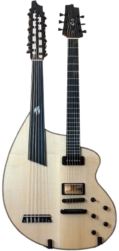
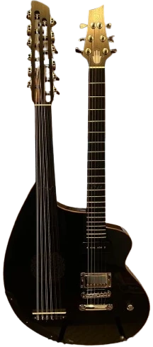
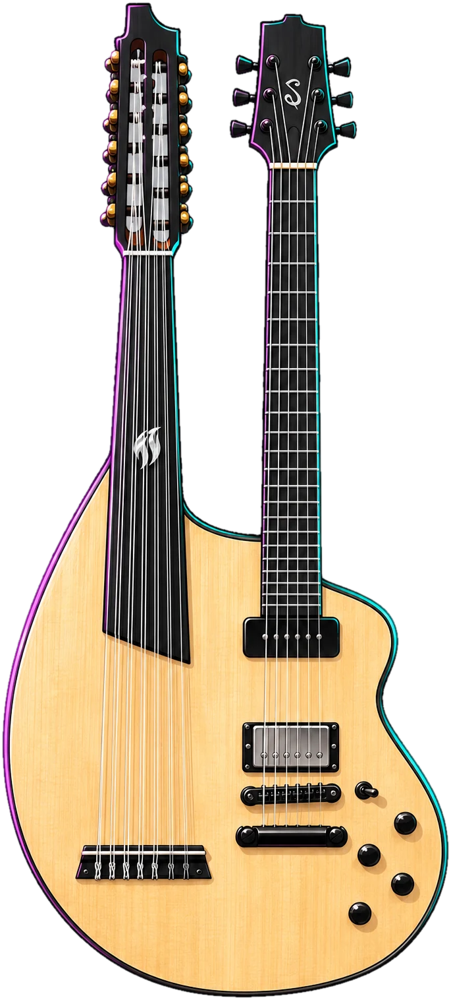

An oud and a guitar, sharing one body. Built by hand by luthier Eric Stiegler. Two exist: one lives in Tangier, the other in Strasbourg.
Press the button, then tap any part to see what it is and where it comes from.

On the left, a fretless oud neck. On the right, a guitar neck with frets. One body carries both.